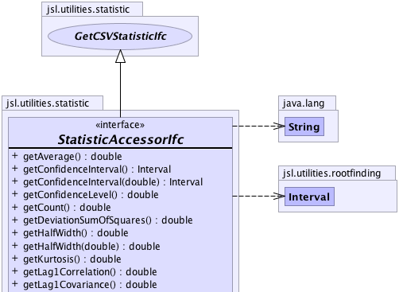
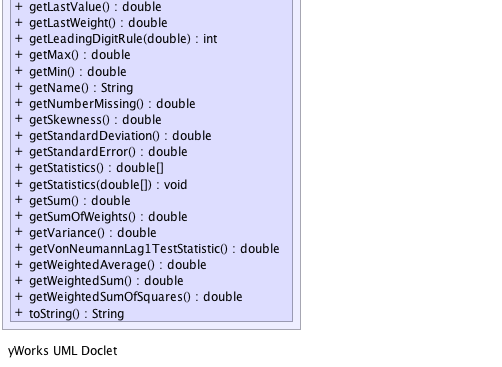

|
||||||||||
| PREV CLASS NEXT CLASS | FRAMES NO FRAMES | |||||||||
| SUMMARY: NESTED | FIELD | CONSTR | METHOD | DETAIL: FIELD | CONSTR | METHOD | |||||||||
public interface StatisticAccessorIfc
The StatisticAccessIfc class presents a read-only view of a Statistic
|  |
|  |
| Method Summary | |
|---|---|
double |
getAverage()
Gets the unweighted average of the observations. |
Interval |
getConfidenceInterval()
A confidence interval for the mean based on the confidence level |
Interval |
getConfidenceInterval(double level)
A confidence interval for the mean based on the confidence level |
double |
getConfidenceLevel()
Gets the confidence level. |
double |
getCount()
Gets the count of the number of the observations. |
double |
getDeviationSumOfSquares()
Gets the sum of squares of the deviations from the average This is the numerator in the classic sample variance formula |
double |
getHalfWidth()
Gets the confidence interval half-width. |
double |
getHalfWidth(double level)
Gets the confidence interval half-width. |
double |
getKurtosis()
Gets the kurtosis of the data |
double |
getLag1Correlation()
Gets the lag-1 sample correlation of the unweighted observations. |
double |
getLag1Covariance()
Gets the lag-1 sample covariance of the unweighted observations. |
double |
getLastValue()
Gets the last observed data point |
double |
getLastWeight()
Gets the last observed weight |
int |
getLeadingDigitRule(double a)
Computes the right most meaningful digit according to (int)Math.floor(Math.log10(a*getStandardError())) See doi 10.1287.opre.1080.0529 by Song and Schmeiser |
double |
getMax()
Gets the maximum of the observations. |
double |
getMin()
Gets the minimum of the observations. |
java.lang.String |
getName()
Gets the name of the Statistic |
double |
getNumberMissing()
When a data point having the value of Double.NaN is presented it is excluded from the summary statistics and the number of missing points is noted. |
double |
getSkewness()
Gets the skewness of the data |
double |
getStandardDeviation()
Gets the unweighted sample standard deviation of the observations. |
double |
getStandardError()
Gets the standard error of the observations. |
double[] |
getStatistics()
Fills up an array with the statistics defined by this interface statistics[0] = getCount(); statistics[1] = getAverage(); statistics[2] = getStandardDeviation(); statistics[3] = getStandardError(); statistics[4] = getHalfWidth(); statistics[5] = getConfidenceLevel(); statistics[6] = getMin(); statistics[7] = getMax(); statistics[8] = getSum(); statistics[9] = getVariance(); statistics[10] = getWeightedAverage(); statistics[11] = getWeightedSum(); statistics[12] = getSumOfWeights(); statistics[13] = getWeightedSumOfSquares(); statistics[14] = getDeviationSumOfSquares(); statistics[15] = getLastValue(); statistics[16] = getLastWeight(); statistics[17] = getKurtosis(); statistics[18] = getSkewness(); statistics[19] = getLag1Covariance(); statistics[20] = getLag1Correlation(); statistics[21] = getVonNeumannLag1TestStatistic(); statistics[22] = getNumberMissing(); |
void |
getStatistics(double[] statistics)
Fills up the supplied array with the statistics defined by this interface index = statistic statistics[0] = getCount(); statistics[1] = getAverage(); statistics[2] = getStandardDeviation(); statistics[3] = getStandardError(); statistics[4] = getHalfWidth(); statistics[5] = getConfidenceLevel(); statistics[6] = getMin(); statistics[7] = getMax(); statistics[8] = getSum(); statistics[9] = getVariance(); statistics[10] = getWeightedAverage(); statistics[11] = getWeightedSum(); statistics[12] = getSumOfWeights(); statistics[13] = getWeightedSumOfSquares(); statistics[14] = getDeviationSumOfSquares(); statistics[15] = getLastValue(); statistics[16] = getLastWeight(); statistics[17] = getKurtosis(); statistics[18] = getSkewness(); statistics[19] = getLag1Covariance(); statistics[20] = getLag1Correlation(); statistics[21] = getVonNeumannLag1TestStatistic(); statistics[22] = getNumberMissing(); The array must be of size 23 or an exception will be thrown |
double |
getSum()
Gets the unweighted sum of the observations. |
double |
getSumOfWeights()
Gets the sum of the observed weights. |
double |
getVariance()
Gets the unweighted sample variance of the observations. |
double |
getVonNeumannLag1TestStatistic()
Gets the Von Neumann Lag 1 test statistic for checking the hypothesis that the data are uncorrelated Note: See Handbook of Simulation, Jerry Banks editor, McGraw-Hill, pg 253. |
double |
getWeightedAverage()
Gets the weighted average of the observations. |
double |
getWeightedSum()
Gets the weighted sum of observations observed. |
double |
getWeightedSumOfSquares()
Gets the weighted sum of squares of the observations. |
java.lang.String |
toString()
Returns a String representation of the Statistic |
| Methods inherited from interface jsl.utilities.statistic.GetCSVStatisticIfc |
|---|
getCSVStatistic, getCSVStatisticHeader |
| Method Detail |
|---|
java.lang.String getName()
double getCount()
double getSum()
double getWeightedSum()
double getWeightedSumOfSquares()
double getAverage()
double getSumOfWeights()
double getWeightedAverage()
double getDeviationSumOfSquares()
double getVariance()
double getStandardDeviation()
double getMin()
double getMax()
double getLastValue()
double getLastWeight()
double getKurtosis()
double getSkewness()
double getStandardError()
double getHalfWidth()
double getHalfWidth(double level)
level -
double getConfidenceLevel()
Interval getConfidenceInterval()
Interval getConfidenceInterval(double level)
level -
double getLag1Covariance()
double getLag1Correlation()
double getVonNeumannLag1TestStatistic()
double getNumberMissing()
int getLeadingDigitRule(double a)
a -
java.lang.String toString()
toString in class java.lang.Objectvoid getStatistics(double[] statistics)
statistics - double[] getStatistics()
|
||||||||||
| PREV CLASS NEXT CLASS | FRAMES NO FRAMES | |||||||||
| SUMMARY: NESTED | FIELD | CONSTR | METHOD | DETAIL: FIELD | CONSTR | METHOD | |||||||||